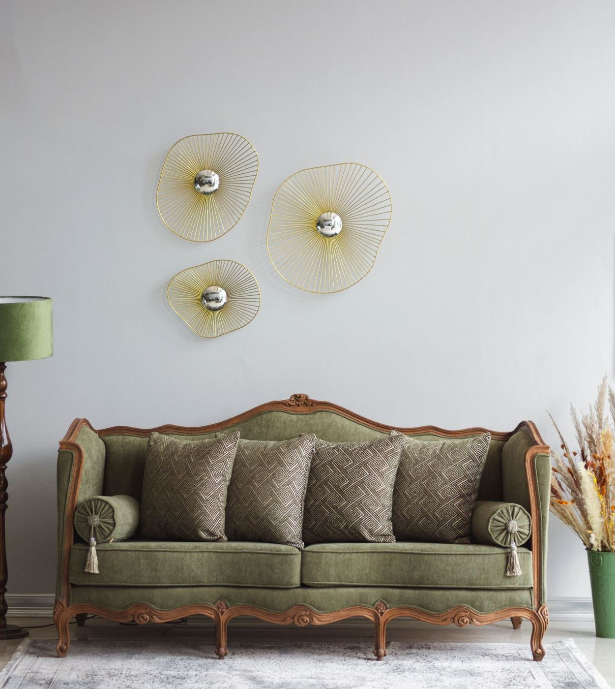

Buyurtmani yakunlash ↗
Eslatmani o'chirish
Madina · Forest mutaxassisiHa, velur uchun ideal. Kulrangdan Zaytunga 1 qatlam yetadi. Kod bugun kechgacha amal qiladi. 12:34

−5% Toshkentda 12 soatda yetkazamiz
12:14
Toshkentda 12 soatda yetkazamiz
12:14